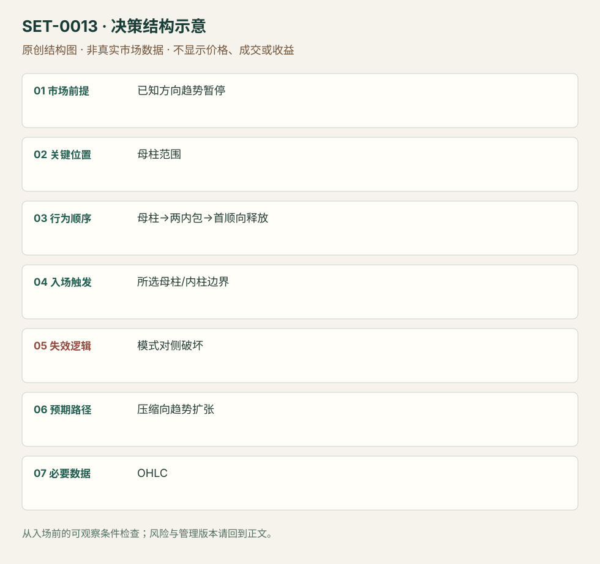

趋势内双内包压缩首次释放
Double Inside Bar Trend Release · SET-0013 · reviewed · v1.0.0
盈利证据：not_established。审查范围与来源版本见第13节；未知字段保留缺失原因。
1. 名称与快速概览
已明确方向背景中，母柱后两根内包柱使区间缩窄；第一次顺背景释放时考虑加入，母柱对侧或压缩结构破坏否定本次释放。
记录口径：PA core；必要数据 OHLC。名称性质：编辑性描述名，英文保留来源术语以便检索。reviewed 只表示本条规则与证据记录审查通过，盈利状态为 not_established。
2. 本质与行为假说
嵌套与突破可见，“蓄能”只是比喻；每个ii并无方向优势。规则在释放前就能识别完整压缩。
3. 适用市场与环境
方向已由背景而非两根小柱决定；趋势内暂停优先。连续窄柱拥挤、多次双向触发的区间回避。
来源实用市场：FDAX期货3分钟、Brooks开盘日内讲义。
Session：FDAX来源3分钟图的完整时区未明；编辑执行按Europe/Berlin现金参考段另锁截止并当日退出。Brooks ES开盘讲义背景若迁移需用America/New_York另立版本。
跨市场：本版不主张已经验证的跨市场迁移；更换市场必须重定数据来源、流动性与session。
4. 出现前的观察清单
必要：母柱界限、两根内包柱及方向背景。增强：压缩位于顺向摆动末端。否决：宽区间中间、母柱过大或突发事件临近。
5. 形成过程与状态转换
母柱→第一内包→第二内包→顺向首次越界→管理；先发生逆向结构破坏则撤销当前计划。
6. Entry trigger 与执行方式
Galen保守版用母柱高低外触发，激进版用内柱边界，不能互换结果。来源另有用收盘内包代替影线内包的定义，必须固定一版。
7. Invalidation 与止损逻辑
母柱另一边是宽结构保护；内柱另一边是较紧模式风险。释放后重新陷入拥挤属时间/质量失效，具体等待柱数为研究参数。
8. Exit、target 与 trade management
先以方向背景已知摆动作目标；失去跟随或双向回收时退出。不要仅因后来趋势很大就选择无限持有模块。
9. 常见 variations
ii、triple inside与更高周期三角形若表达同一压缩释放，合并为变体。反向失败转向Hikkake时，主机会改变为突破失败。
10. 失败方式与不交易条件
正常亏损：第一次释放随后穿过模式。未成立：两柱未满足所选inside定义。偏离：母柱版名义却用内柱紧止损。多次双向触发可能产生连续成本。
11. 与相近 setups 的区别
12. 图表与案例解读
已查看FDAX12-20的3分钟StopOrderEntries图：一组绿色区域在趋势里，另一组黄色区域处于拥挤；图内分别展示母柱与更近触发。图头12/10/2020格式歧义，时区未知。图中的后续上下运动不能让初始拥挤自动变成趋势背景。
- [VIS-000014] Stop Order Entries For Breakouts；定位：StopOrderEntries。母柱/内柱不同触发位置；同样ii在趋势与拥挤中含义不同。 验证：chart_viewed。

本地原创示意（VIS-000070，非真实市场数据）：

小屏阅读可打开原尺寸示意图并缩放。

此图用于对照识别顺序与风险定义；不计入真实案例覆盖率。
视觉材料元数据与查看范围
- VIS-000014 · real_source_chart / structure_and_trigger / chart_viewed
品种：FDAX 12-20；日期：未知/不适用；周期：3分钟；时区：未知/不适用
日期未在图中核对；时区未在图中核对；来源图表不是成交审计 - VIS-000070 · synthetic_structure_diagram / illustration_only / generated_not_market_evidence
品种：未知/不适用；日期：未知/不适用；周期：未知/不适用；时区：未知/不适用
无真实品种、日期或价格：这是结构示意
13. 证据、分歧与未知项
Galen和Brooks两家对压缩说明相容，但Brooks反向开盘版本不能当本条顺趋势例。规则参数及背景选择尚无独立收益验证。
- [EVD-000021] Galen Woods，《Double Inside Bar Pattern For Intraday Trading》，SRC-0019；定位：Identifying、Entry、Failures。支持：两根连续inside bar、母柱/内柱触发与失效，强调趋势和拥挤过滤
- [EVD-000022] Al Brooks，《Patterns on the Open》，SRC-0001；定位：PDF页22。支持：ii压缩可作为突破模式，开盘例存在反向突破变体
审查边界：来源份数与独立核心核验分开；当前类别为 independent_context_only。正文中的概念、官方事实、衍生解说或同族资料只按其支持范围使用。
14. 可用于复盘的检查表
- ☐ 下单前的前提可核对：已知方向趋势暂停
- ☐ 事前标记位置：母柱范围
- ☐ 行为按顺序出现：母柱→两内包→首顺向释放
- ☐ 实际触发符合选定版本：所选母柱/内柱边界
- ☐ 事先写明本次否定条件：模式对侧破坏
- ☐ 目标/路径只用当时已知信息：压缩向趋势扩张
- ☐ 数据满足 OHLC；记录时间、点差、滑点、队列和未成交
- ☐ 记录截止平仓及规则偏离；正常亏损不事后改成“未成立”
15. 后续验证问题
对同一批候选比较影线内包和收盘内包，记录触发宽度与成本；避免凭后续收益选择定义。
双向相关导航
- SET-0005 内包线突破失败陷阱 ii突破交易压缩后的顺向释放，本条必须先有外侧突破失败。
- SET-0010 突破后首次回测守住旧边界 II在压缩释放时入，本条释放已发生且等待回测。
- SET-0016 反复逼近固定边界的压力突破 压力突破必反复攻击事前水平、反向回撤缩短；本条必有嵌套母柱，不要求反复水平测试。